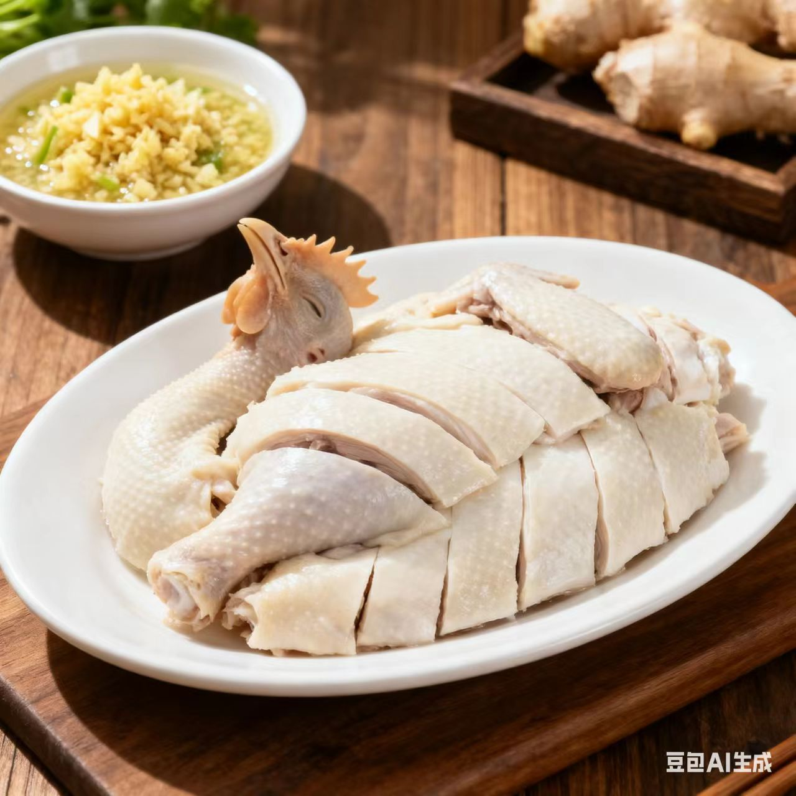
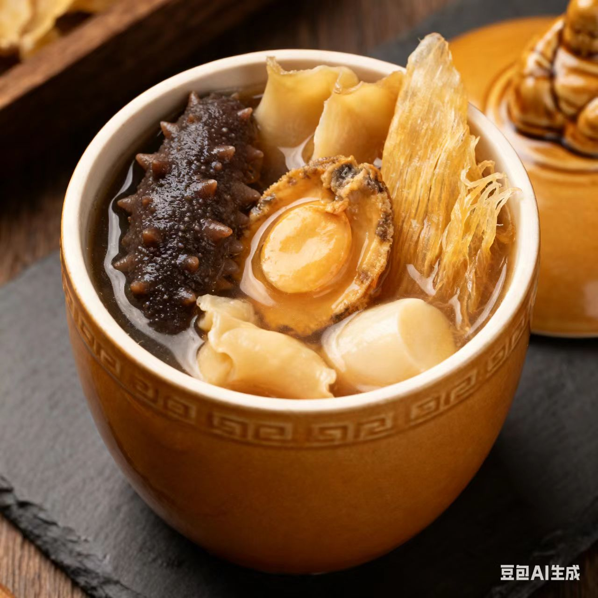
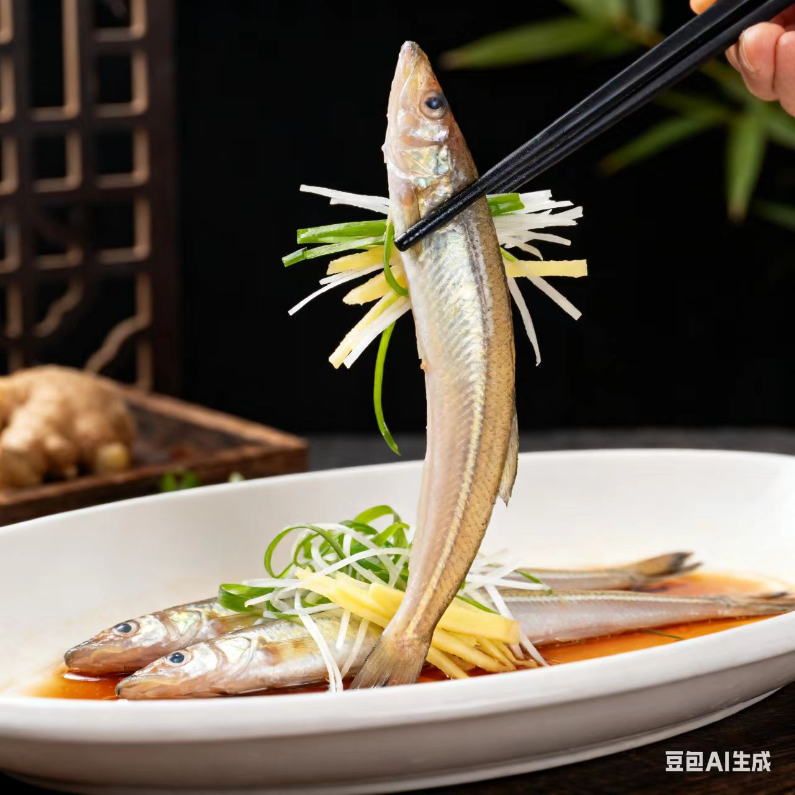

华南菜 · HuaNan Cuisine
精致鲜甜的海味与清雅
一、起源与历史
以粤菜为核心（含闽、粤、琼等），秦汉时受中原饮食影响，明清通商后融合海外技法，形成“鲜为主、清为魂”的体系，烹饪思想强调“不时不食、原味至上”
二、地理与气候影响
华南地处亚热带/热带，临海多湿，饮食以“清润鲜甜”为主；海洋与热带果蔬资源丰富，食材涵盖海鲜、汤羹、鲜果等
三、主要烹调技法
- 蒸
- 爆
- 烧
- 扒
- 熘
每种技法对应味型，如蒸菜的清鲜味、灼菜的本味、煲菜的醇香味
四、代表菜肴
-
白切鸡

-
佛跳墙

-
海南文昌鸡

五、风味与审美
华南菜的特点是“清鲜精致、时令为先”，追求“淡中藏味”（如白切鸡的嫩+佛跳墙的浓），体现华南人“细腻讲究”的生活态度
六、文化意象
华南菜是“海洋文明的味觉表达”，从早茶点心到宴席佛跳墙，体现了“市井与奢华的双重气质”
七、地方俗语
食在广州，厨出凤城
无鸡不成宴，无汤不成席
拓展视野：视频
拓展视野：学术资料
| 研究论文 / 报告名称 | 链接 |
|---|---|
| 《经典粤菜的成分分析与营养价值评价》 | 查看论文 |